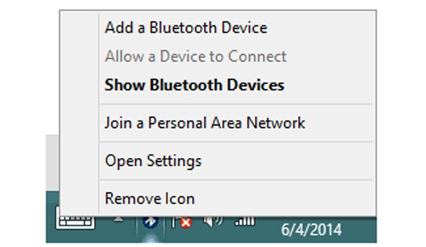
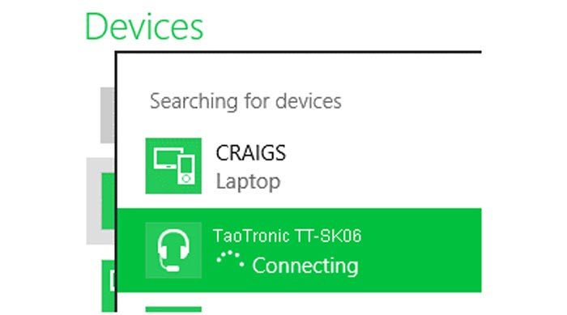
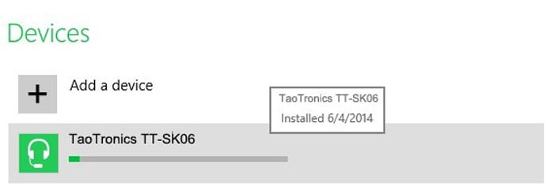
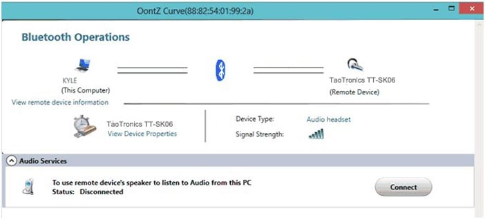

Pair & Connect Your TaoTronics Speaker with Your Windows 8 Computer
Important: Make sure to disconnect your audio cable from both your speaker and computer before attempting to pair via Bluetooth
Please note: You may need to update your computer's Bluetooth driver before attempting to pair and connect to your TaoTronics speaker. which does not require a special driver itself and there is no driver for it. Bluetooth drivers must come from the specific manufacturer for your exact computer model. Download and install the appropriate Bluetooth driver from the computer vendor's website. then
restart your system before attempting to pair and connect to your TaoTronics speaker. From your desktop toolbar on your Windows 8 computer - Right click the Bluetooth icon
and select "Add a Bluetooth device".

This will take you to your Windows 8 'Device' page. Now put your TaoTronics Speaker into pairing mode and click the + add device button.

Once your TaoTronics Speaker has been added. please wait and stay patient until windows has installed your TaoTronics Speaker and the "Connecting" Process has been completed (a small blue pro gress bar will appear under the name of the device).

Once completed you will find a new TILE added on the Windows 8 'toolbar' from your desktop for the TaoTronics Speaker.
Click on the tile for your TaoTronics Speaker and a Bluetooth Control box will start up and appear on your desktop screen. From here you will see your TaoTronics Speaker you have just added. From the Bluetooth control box please select the 'connect' button (to connect) your speaker.
